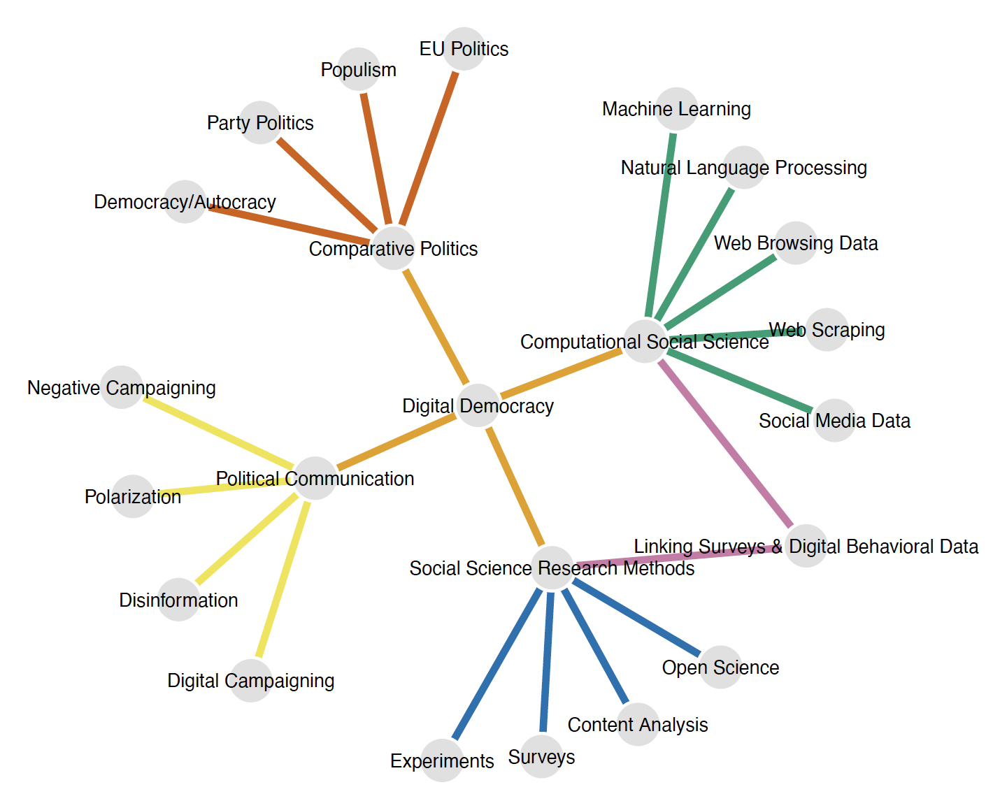

Introduction
University of Mannheim & GESIS – Leibniz Institute for the Social Sciences
2024-09-04
About me
- Dr. in Political Science in 2016 at the University of Heidelberg
- No R or programming training during my studies
- 2016-2023, Postdoc/Senior Researcher at GESIS – Leibniz Institute for the Social Sciences
- Since November 2023
- Scientific Director Department Computational Social Science at GESIS
- Professor of Computational Social Science, University of Mannheim
My research interests
What are your expectations for this class?
Let’s do a survey!
About you
- Who are you?
- What’s your study program and which semester are you in?
- What are your experiences with scientific computing/programming?
- Why this course? Which topics/methods/data do you want to learn more about?
Agenda for today
Logistics
Introduction to Computational Social Science
R: Warmup session, basics & introduction to tidyverse
1. Logistics
Seminar dates and topics |
||
|---|---|---|
| Date | Topics | Required reading |
3 September 2024 |
|
|
11 September 2024 |
|
Lazer, D., & Radford, J. (2017). Data ex Machina: Introduction to Big Data. Annual Review of Sociology, 43(1), 19–39. |
18 September 2024 |
|
Fiesler, C., & Proferes, N. (2018). ‘Participant’ Perceptions of Twitter Research Ethics. Social Media + Society, 4(1). |
2 October 2024 |
|
Tromble, R. (2021). Where Have All the Data Gone? A Critical Reflection on Academic Digital Research in the Post-API Age. Social Media + Society, 7(1). |
16 October 2024 |
|
Schwemmer, C., & Wieczorek, O. (2020). The Methodological Divide of Sociology: Evidence from Two Decades of Journal Publications. Sociology, 54(1), 3–21. |
23 October 2024 |
|
Gilardi, F., Alizadeh, M., & Kubli, M. (2023). ChatGPT outperforms crowd workers for text-annotation tasks. PNAS, 120(30). Reiss, M. V. (2023). Testing the Reliability of ChatGPT for Text Annotation and Classification: A Cautionary Remark. arXiv Preprint. |
Seminar dates and topics |
||
|---|---|---|
| Date | Topics | Required reading |
30 October 2024 |
|
Sen, I., Flöck, F., Weller, K., Weiß, B., & Wagner, C. (2021). A Total Error Framework for Digital Traces of Human Behavior on Online Platforms. Public Opinion Quarterly, 85(S1), 399–422. |
6 November 2024 |
|
Chan, C.- Hong, Schatto-Eckrodt, T., & Gruber, J. (2024). What makes computational communication science (ir)reproducible? Computational Communication Research, 6(1). Nyhan, B., Settle, J., Thorson, E., Wojcieszak, M., Barberá, P., et al. (2023). Like-minded sources on Facebook are prevalent but not polarizing. Nature, 620(7972), 137–144. |
13 November 2024 |
|
Bauer, P. C., & Landesvatter, C. (2023). Writing a reproducible paper with RStudio and Quarto. OSF Preprint. |
20 November 2024 |
|
|
27 November 2024 |
|
|
4 December 2024 |
|
|
Learning objectives (on MA level)
- Advanced understanding of concepts, methods, data used and challenges in CSS
- Critical reflection of the applicability of CSS in social science research
- Learning to use CSS methods in R
- Application of CSS methods in R for own research question
Modus operandi in the class
- Introduction to the session’s topic by instructor
- Required reading: (mostly) applied papers
- We’ll discuss these papers in the class
- We’ll code in the class \(\rightarrow\) please bring your laptop
- Questions are always possible, this is supposed to be interactive
Requirements for examination/grades
- Regular participation in class
- Writing a review of the required readings for two classes to be submitted by Sunday evening before the respective class (Studienleistung/Coursework)
- Presentation of your own research idea for your term paper in the last 3 classes of the semester
- Written term paper based on an analysis in R (3,000-5,000 words), deadline: 31 January 2025 (Prüfungsleistung/Examination)
Format of the reviews
- Guiding questions:
- Describe what problem or question these papers address and the main contributions that they make towards a solution or answer.
- Reflect on the main strengths and weaknesses of these papers.
- What are the concepts, assumed social mechanisms and operationalizations used in the papers?
- What are the data in use? How are the data analyzed? Does this seem appropriate?
- How convincing do you find the arguments presented by the authors? Are the conclusions backed up by the empirical results?
- Do you see any ethical concerns?
- If papers are empirical, how do you judge their replicability?
- If applicable, are there commonalities or differences between the two papers? How do they relate to each other?Format of term paper (3,000-5,000 words)
- Brief motivation and research question
- Concise theoretical overview: for what conceptual and theoretical reasons do I choose these data and methods?
- Research design
- Data and variables
- Method: no detailed mathematical description needed, but why does this method fit my research question and my data?
- Results
- Interpretation and conclusions
- Analysis code as an R script: needs to be fully reproducible
Information management and communication
- Slides and materials will be online: https://sebastianstier.com/ma_css24-25
- Communication
- Via email
- In person after the class
- Via Zoom
- Submit the final term paper to sebastian.stier@gesis.org
- Data and scripts can be shared via the secure platform Cryptshare: https://cryptshare.gesis.org
The elephant in the room: AI, LLMs, ChatGPT et al.
Meyer, J. G., Urbanowicz, R. J., Martin, P. C. N., et al. (2023). ChatGPT and large language models in academia: Opportunities and challenges. BioData Mining, 16(1), 20. https://doi.org/10.1186/s13040-023-00339-9
- It’s fine to look for help online but without an understanding of the R code base the use of AI is inefficient.
- You’ll learn much more if you try to find a solution within-R, e.g., ?mean
- We will code in class \(\rightarrow\) applied programming.
- Term paper:
- Synthesis of theory, research question and code.
- Documentation of code: tell me why each step is needed and what it does.